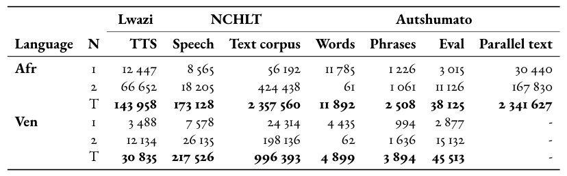
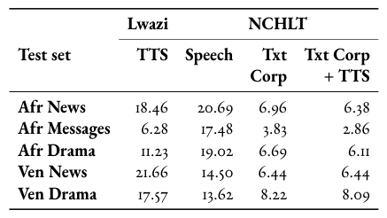
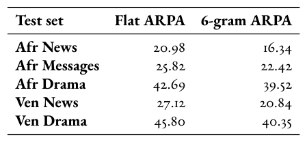
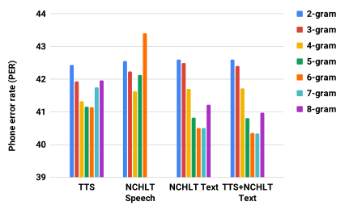
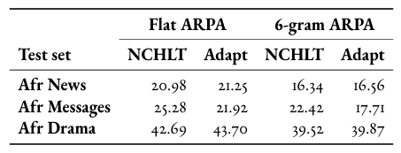

RAIL 2021Traduction automatique
Étude de la faisabilité de la collecte de données de parole diffusées pour développer des ressources pour les langues sud-africaines
Traduction automatique, non relue par un humain. L'article original est la version de référence ; les phrases soulignées sont celles dont les contrôles automatiques n'étaient pas sûrs.
Proceedings of the 2nd Workshop on Resources for African Indigenous Languages (RAIL 2021), Journal of the Digital Humanities Association of Southern Africa.
Traduction par Ernst van Gassen (Arktos AI Lab), sous licence CC BY-SA 4.0 comme l'original. Réutilisation permise avec attribution ; partage des adaptations dans les mêmes conditions. Les auteurs originaux n'ont pas relu ni approuvé cette traduction.
Texte brut réutilisable, avec sa licence : Français · LICENCE
Affiliations
Badenhorst, Jaco
Voice Computing Research Group, CSIR Next Generation Enterprises and Institutions Cluster, Pretoria, South Africa
de Wet, Febe
Department of Electrical and Electronic Engineering, Stellenbosch University, South Africa
Adresses e-mail retirées pour la protection de la vie privée. Elles figurent dans le PDF original.
Résumé
Des données suffisantes dans la langue cible restent un facteur important dans le développement des systèmes de reconnaissance automatique de la parole (ASR). Par exemple, l'amélioration substantielle de la modélisation acoustique que les architectures profondes ont récemment réalisée pour les langues bien dotées nécessite de grandes quantités de données de parole. De plus, les modèles acoustiques dans les systèmes ASR de pointe qui généralisent bien dans différents domaines sont habituellement entraînés sur plusieurs corpus, et pas seulement sur un ou deux. Des corpus divers contenant des centaines d'heures de données de parole ne sont pas disponibles pour les langues à ressources limitées. Dans cet article, nous étudions la faisabilité de la création de ressources supplémentaires de parole pour les langues officielles d'Afrique du Sud en employant une procédure semi-automatique de collecte de données. Des modèles de réseaux de neurones artificiels à retard temporel factorisé ont été utilisés pour générer des transcriptions au niveau des phones de données de parole collectées à partir de différents domaines.
Mots-clés
langages à faibles ressources, récolte de données, reconnaissance automatique de la parole, TDNN-F, adaptation de domaine
1 Introduction
Au moins 10 des langues officielles de l'Afrique du Sud sont actuellement considérées comme limitées en ressources. De nouvelles méthodes pour étendre rapidement les ressources nécessaires au développement de la reconnaissance automatique de la parole sont nécessaires pour débloquer tout le potentiel de l'application de techniques de modélisation de pointe à ces langues. Les émissions de radio représentent une telle source potentiellement illimitée de données de parole, qui en Afrique du Sud est encore largement inexploitée. Les émissions diffusées contiennent généralement divers types de données, y compris des discours produits par différents locuteurs dans divers styles de parole, mais aussi de nombreux événements non verbaux. Pour cette raison, un projet de collecte de données a récemment été initié en collaboration avec le Centre sud-africain pour les ressources linguistiques numériques[1] afin de collecter, curer et développer de nouveaux corpus de données de parole à partir de données de diffusion.
La collecte de données de parole pourrait être automatisée si des systèmes de transcription automatique existaient. Cependant, le niveau de développement de la technologie ASR en Afrique du Sud a encore un long chemin à parcourir avant que ce ne soit une option réalisable pour la collecte de données dans le pays. Comme première étape vers une annotation automatique, des modèles acoustiques initiaux pour amorcer le travail de collecte ont été dérivés du corpus oral NCHLT existant, bien que limité (Barnard et al. 2014). La viabilité de l'utilisation de cet ensemble de données pour entraîner des modèles acoustiques basés sur des réseaux de neurones profonds a été étudiée dans une étude précédente dans laquelle des systèmes de référence pour les 11 langues officielles ont été mis en œuvre à l'aide de réseaux de neurones à délai temporel factorisés (TDNN-F) (Badenhorst & de Wet 2019). Cet article rend ensuite compte de l'adaptation de ces modèles en utilisant des données de parole collectées pour améliorer la qualité du système de transcription. L'objectif est d'améliorer la capacité du système à transcrire automatiquement la parole provenant de divers domaines.
Dans une étude récente, Szaszáak & Pierucci (2019) ont examiné plusieurs approches pour adapter des modèles acoustiques basés sur des TDNN en anglais à l'anglais avec accent indien. Ils ont testé différentes stratégies, y compris des tentatives d'utilisation de l'apprentissage par transfert, un simple réentraînement de l'ensemble du réseau pendant quelques époques et l'application de l'adaptation i-vecteur dans Kaldi (Povey et al., 2011). Outre le style de parole, d'autres différences entre les données d'entraînement existantes et les exemples de discours nouvellement obtenus sont importantes à prendre en compte. Concernant l'adaptation par i-vecteur, par exemple, Vaněk et al. (2019) ont constaté qu'un nouveau modèle téléphonique tchèque entraîné sur de courts énoncés segmentés entraînait une mauvaise reconnaissance d'énoncés de centre d'appels réels beaucoup plus longs. Une analyse plus approfondie a révélé que l'estimation des statistiques i-vectorielles avec les modèles TDNN était incorrecte, ce qui a entraîné un échec de l'adaptation. À l’inverse, l’adaptation i-vecteur en conjonction avec des techniques de perturbation des données s’est révélée être une approche efficace pour améliorer les modèles acoustiques basés sur TDNN pour les langues à faibles ressources (Kumar & Aggarwal 2020).
La section 2 du présent document décrit le processus de collecte des données et les défis qui y sont associés. La section 2.1 explique comment les nouvelles données ont été sélectionnées, suivie d'une description des ensembles de données d'essai qui ont été définis pour l'évaluation du système à la section 3. Deux des 11 langues officielles ont été incluses dans notre investigation : l'afrikaans (Afr) et le tshivenda (Ven). La section 4 présente les configurations importantes des systèmes de transcription affinés, tandis que la section 5 décrit les procédures permettant d'extraire des segments de parole plus courts à partir de données brutes. La section 6 fournit des résultats pour différentes configurations du système. Une discussion sur les résultats (Section 7) et les conclusions ultérieures (Section 8) conclut le document.
2 Collecte des données
À l'origine, on s'attendait à ce que les données diffusées par diverses stations de radio soient transmises en continu à un serveur. Cependant, au cours du processus d'identification des sources de données possibles, d'autres options ont également émergé. Par exemple, certaines stations de radio ont offert de fournir des copies physiques de leur contenu tandis que d'autres étaient disposées à transférer des données via un lien dédié. Une autre possibilité identifiée était de transférer les données à partir d'un service d'hébergement de contenu. Une brève description de ces trois scénarios de capture de données est la suivante :
- 1. Flux de données depuis le cloud vers le stockage local
- 2. Transfert de données de prestataires individuels
- 3. Transfert de données depuis un service d'hébergement.
En outre, différents ensembles de données de diffusion pourraient être obtenus à partir de chaque scénario de capture de données. Par exemple, certaines émissions contiennent des bulletins d'information parfaitement scriptés avec un audio de haute qualité, mais seulement pour un nombre limité de lecteurs de nouvelles. Les émissions d'information scriptées n'étaient disponibles que dans le cadre du scénario 2 de capture de données. Il existe également des quantités beaucoup plus importantes de données audio non scriptées disponibles. Les services d'hébergement sud-africains fournissent de nombreux podcasts d'émissions de radio dans toutes les langues. La collecte d'émissions de la part de contractants individuels a été gravement affectée par la pandémie de Covid-19. Les opérations des petites stations de radio ont été réduites alors que les stations faisaient face à de nombreux nouveaux défis. Une station basée à l'université a même dû se retirer du projet. La conclusion d'accords de partage de données a également été un processus extrêmement lent et chronophage.
Heureusement, la collaboration avec Iono[2] a été couronnée de succès. Des accords pourraient être conclus avec quelques stations de radio produisant et distribuant des podcasts sur la plate-forme audio en ligne Iono. Par conséquent, les ressources recueillies pour les deux langues considérées dans la présente étude ne pourraient être obtenues que dans le cadre des scénarios 1 et 3.
2.1 Sélection de contenu
En termes de ressources de parole disponibles pour les langues d'Afrique du Sud, l'Afr est dans une légèrement meilleure position que certaines des autres langues. Il a été inclus dans l'étude pour développer la stratégie de récolte et fournir une perspective plus large sur les différentes possibilités, compte tenu de la grande variété de podcasts. Ven a été choisi comme exemple d'une langue sévèrement limitée en ressources. Les podcasts étaient beaucoup plus limités et aucune donnée d'actualités précédemment compilée n'était disponible, comme dans le cas d'Afr. Le matériel à partir duquel les données ont été sélectionnées pour la collecte incluait trois styles de parole : la parole lue (par exemple, les bulletins d'information), la parole conversationnelle (par exemple, les drames radiophoniques), et les discours en studio (messages délivrés par un seul locuteur dans un studio).
Les facteurs pris en compte pour sélectionner les émissions à récolter comprenaient la disponibilité, le style de parole et la présence ou l'absence d'événements non verbaux comme la musique, les publicités, etc. Nous avons également tenté de limiter le désaccord acoustique entre les données à récolter et les données NCHLT à partir desquelles les modèles acoustiques initiaux ont été dérivés. Les données NCHLT consistaient en des instructions de parole lue, claires, avec un bruit de fond minimal. Par conséquent, les données de parole lues telles que les nouvelles ou les discours en studio ont été considérées en premier.
Pour Afr, des données abondantes étaient disponibles pour des discours de qualité studio. Une émission de radio avait plus de 85 heures d'enregistrements clairs, un seul intervenant par épisode et un nombre suffisamment grand d'intervenants à travers tous les épisodes. Des méta-données des intervenants étaient également disponibles pour les épisodes. Il est important de noter que les podcasts de cette émission ne comprenaient aucun jingle de début ou de fin, et que la durée d'un épisode était inférieure à cinq minutes, ce qui réduit considérablement le besoin de pré-traitement et de segmentation. Les données représentaient un nouveau style de parole de discours clair, que le présentateur présentait de manière conversationnelle. Les données de cette émission de radio ont donc été jugées appropriées pour tester le bootstrapping NCHLT.
Malheureusement, aucune émission de qualité audio correspondante n'a pu être identifiée pour Ven. Un ensemble de 1 118 bulletins de nouvelles de Ven qui ont été enregistrés à partir de la radio en continu a donc été choisi comme la meilleure correspondance disponible pour les données du NCHLT. Chaque enregistrement comprenait un bulletin de nouvelles d'environ cinq minutes, ce qui se traduit par près de 90 heures de données. L'audio comprenait également des clips de journalistes et des carillons de nouvelles.
3 Données de test
Des données d'essai représentatives ont été nécessaires pour évaluer la performance des systèmes de transcription de base ainsi que l'impact de l'adaptation du modèle acoustique pour améliorer la collecte de données pour Afr et Ven. Les ensembles de test ont donc été sélectionnés à partir des données disponibles, en veillant à ce que les conditions acoustiques et les styles de parole présents dans les données sélectionnées pour l'extraction soient également représentés dans les données de test. En plus de l'ensemble de test Afr News existant, quatre ensembles de test ont été transcrits manuellement : Ven News, Afr Messages ainsi que Ven et Afr Drama. Les épisodes de drama ont été inclus car ils contiennent des discours produits par plusieurs locuteurs, principalement dans un style conversationnel et dans diverses conditions acoustiques. La durée en heures et la répartition des locuteurs pour chaque ensemble de données de test sont fournies dans le Tableau 1.
Tableau 1 : Durée et informations sur les locuteurs des données de test

4 Raffinement du système
Des systèmes de transcription affinés ont été créés pour permettre la transcription automatique du contenu sélectionné présenté dans la section 2.1. Dans cet article, nous rapportons les résultats pour les trois types de systèmes suivants: 1) Base de référence, 2) Système affiné basé sur le texte et 3) Systèmes acoustiquement adaptés. Les systèmes de référence ont utilisé les modèles initiaux NCHLT TDNN-F (Badenhorst & de Wet 2019) en combinaison avec un modèle de langage ARPA plat constitué de uni-grammes de phones équiprobables. Les systèmes affinés basés sur le texte ont employé la modélisation de langage étant donné les corpus textuels limités disponibles dans les langues et les systèmes adaptés acoustiquement ont été construits en mettant à jour les modèles acoustiques au sein des configurations ci-dessus en utilisant des données automatiquement transcrites. La boîte à outils Kaldi a été utilisée pour créer tous les modèles acoustiques utilisés dans cette étude. Il a également été utilisé pour effectuer la segmentation et l'adaptation du modèle acoustique.
4.1 Affinement basé sur le texte
Pour configurer les systèmes de transcription affinés par le texte, des modèles de langage ont été construits à partir d'un certain nombre de corpus textuels produits au cours de divers projets antérieurs pour les 11 langues. L'application de ces textes au développement de systèmes a permis de garantir que les systèmes développés pour différentes langues seraient comparables, puisque les mêmes types de textes sont disponibles dans chaque langue. Les invites TTS provenant des projets CSIR Lwazi se sont révélées très utiles pour configurer les systèmes de transcription de base. Les combinaisons ultérieures des invites TTS avec des textes des projets CSIR NCHLT Speech[3], CTexT NCHLT Text (Puttkammer et al. 2014a,b), et CTexT Autshumato (McKellar & Puttkammer 2020, Groenewald & du Plooy 2010) ont également été évaluées. Le tableau 2 présente le nombre de jetons de mots uniques (N=1) pour chaque texte en Afr et en Ven. De plus, les comptages de 2-grammes de mots (N=2) donnent une perspective sur les séquences de mots et le nombre total de tokens (T) dans chaque texte renseigne sur la taille des corpus.
Les valeurs du tableau 2 indiquent que le corpus de texte Afr Lwazi TTS contient plus de mots uniques (12 447) que les annotations des données de parole du NCHLT. Le tableau montre également que la taille du vocabulaire pour le corpus textuel NCHLT est presque quatre fois supérieure à celle du corpus textuel Lwazi TTS. Bien que la composante Afr du corpus de texte parallèle Autshumato se compose d'un nombre similaire de mots que le corpus de texte NCHLT, sa taille de vocabulaire est sensiblement plus petite (30 440 mots uniques).
En revanche, le corpus textuel Ven Lwazi TTS ne contenait que 3 488 mots uniques, soit moins de mots que les annotations des données de parole NCHLT. Bien que le corpus textuel NCHLT contienne plus de sept fois le vocabulaire du texte TTS Lwazi, comparé à la composante Afr, la taille du vocabulaire était d'environ la moitié du nombre de mots uniques dans Afr. Le nombre total de mots du corpus Ven NCHLT Text était d'environ 1 million. Cependant, les textes plus volumineux peuvent inclure plus de mots hors langue que les petites ressources textuelles TTS curatées. Les noms propres et la terminologie anglaise qui apparaissent dans le texte du NCHLT Ven pourraient contribuer à la taille plus grande du vocabulaire.
Les systèmes de reconnaissance automatique de la parole (ASR) dont le vocabulaire est dérivé de textes limités ne peuvent pas prédire les mots hors vocabulaire (OOV) dans les données de test. Pour mieux comprendre l'impact des mots OOV sur les résultats des systèmes affinés basés sur le texte, le tableau 3 résume les taux d'OOV pour les corpus TTS, NCHLT Speech, NCHLT Text ainsi que pour une combinaison des textes NCHLT Text et TTS (Txt Corp + TTS). Il est clair que la prédiction de données d'actualités en utilisant le texte TTS limité (surtout dans le cas de Ven) inclurait plus d'erreurs en raison du taux OOV plus élevé de ces ensembles de données. Les valeurs indiquent beaucoup moins de mots OOV pour le plus grand corpus NCHLT Text. De plus, le vocabulaire de ces textes produit des taux OOV similaires pour les ensembles de données de test d'actualités et de drame.
4.2 Raffinement acoustique
Les différents styles de parole dans les données de diffusion nécessitent le raffinement des modèles acoustiques. Dans ce travail, l'approche d'adaptation a été basée sur le réentraînement du modèle initial NCHLT, mais en gardant les i-vecteurs NCHLT intacts. Cela signifie que les i-vecteurs pour les données d'adaptation ont également été générés à l'aide de l'extracteur i-vecteur NCHLT.
L'approche comportait une recette d'adaptation du modèle TDNN-F en deux étapes. Pour les données d'adaptation, nous avons utilisé les transcriptions automatiques des systèmes affinés par le texte à 6-grammes générées pour les nouvelles données. La première étape de la recette d'adaptation a reproduit la configuration d'entraînement du modèle initial, mais au lieu de finaliser le processus, elle a laissé la configuration d'entraînement dans un état tel qu'une deuxième étape d'entraînement pouvait être appliquée. La deuxième étape est donc une étape d'adaptation, ré-entraînant le modèle standard (quatre époques) pour une époque supplémentaire, en utilisant maintenant les données d'adaptation. Pour permettre l'entraînement du modèle et l'extraction des caractéristiques standard, des alignements triphoniques et une perturbation des données ont été appliqués à la fois aux données NCHLT et aux données d'adaptation. Les modèles NCHLT initiaux ont été utilisés pour effectuer l'alignement des triphones.
Avec le ré-entraînement, l'intensité de l'entraînement adaptatif était contrôlée, en ajustant le taux d'apprentissage pour les itérations d'entraînement de la dernière époque et non le nombre d'itérations (ou l'entraînement sur plus d'époques). En substance, les seuils standards de début et de fin du taux d'apprentissage de la recette TDNN-F à travers les quatre époques initiales de l'entraînement ont été laissés au même réglage, restreignant l'algorithme d'entraînement à ces limites. Pour l'entraînement de la dernière époque, des seuils similaires au seuil inférieur d'entraînement (0,000020 et 0,000015 respectivement) ont été appliqués. Cela a restreint l'algorithme à appliquer un taux d'apprentissage proche du réglage inférieur pour les itérations restantes de l'entraînement.
Tableau 2 : Comparaison des tailles de vocabulaire pour les sources de données textuelles

Tableau 3: Taux de mots hors vocabulaire (en pourcentage) de différents textes compte tenu des données de test

5 Récolte de données
Comme indiqué dans la section 2.1, la collecte de données nécessite généralement une segmentation audio. Les systèmes ASR sont entraînés sur des segments de parole relativement courts, excluant les événements non-parole tels que les jingles et la musique. Dans cette étude, deux techniques de segmentation différentes ont été appliquées. La première, une approche basée sur la diarisation des locuteurs, a permis la détection automatique du début des nouvelles dans les enregistrements Ven de 10 minutes. Une deuxième méthode de détection de silence basée sur l'alignement Kaldi a ensuite été appliquée aux données de récolte Afr et Ven. Une segmentation suffisante était possible pour les étiquettes de silence détectées d'une durée de 0,1 seconde ou plus. Les segments produits avaient des durées comprises entre 5 et 15 secondes.
5.1 Segmentation
Pour détecter le début des actualités (après le jingle), nous avons appliqué un algorithme heuristique. L'heuristique a utilisé une implémentation non supervisée de la diarisation des locuteurs, telle qu'implémentée dans la bibliothèque Python open-source pour l'analyse des signaux audio (Giannakopoulos 2015). L'application de la diarisation des locuteurs à chaque enregistrement et la définition du nombre prédéfini de clusters à trois et quatre étiquettes de locuteurs, respectivement, a abouti à des classes séparables. Les autres valeurs de paramètres choisies pour l'heuristique ont été déterminées par une brève analyse préalablement menée sur les segments de l'ensemble de test de Ven news segmentés manuellement. Comme indiqué dans le tableau 1, les segments de lecteurs de Ven News avaient une durée totale de près de 33 minutes et la durée moyenne et médiane des segments était d'environ 38 secondes. Cela signifiait que le segment typique du lecteur de nouvelles pouvait durer environ 40 secondes ou plus. Par la suite, les étiquettes de clusters de locuteurs des nouveaux enregistrements ont été validées pour vérifier si de tels longs segments étaient détectés dans les 120 premières secondes de chaque enregistrement. Pour 44 % des enregistrements, aucune détection n'a été effectuée, de sorte que la durée minimale du segment a été réduite à 20 secondes. Cela a encore réduit le taux de non-détection à 12 % des enregistrements. Compte tenu de ces résultats, les étapes heuristiques suivantes ont été mises en œuvre pour sélectionner le premier segment de nouvelles au début de l'enregistrement :
- 1. Sélectionnez uniquement les segments commençant au moins deux secondes après le début de l'enregistrement, car l'inspection a révélé que les segments plus longs commençant à zéro seconde contenaient généralement de la musique.
- 2. Sélectionnez uniquement des segments d'une durée minimale de 25 secondes.
- 3. Calculer le chevauchement temporel entre les segments créés par la diarisation à trois et quatre locuteurs pour les 180 premières secondes de l'audio.
- 4. Pour tout segment chevauchant détecté lors de l'Étape 3, définir l'heure de début à celle du premier segment avec un chevauchement de 50 % ou plus.
- 5. Coupez les fichiers audio de sorte que chaque fichier commence à l'heure de début mise à jour.
L'application des étapes ci-dessus a permis de détecter les heures de début des nouvelles pour 90 % des enregistrements. Des vérifications ponctuelles ont confirmé des débuts de nouvelles valides.
5.2 Sélection du segment
Les enregistrements complets du bulletin Ven incluaient des extraits d'actualités, certains contenant de l'anglais ou une autre langue. De plus, une partie ou la totalité des jingles du journal pouvait être incluse dans un segment, car le journal ne commençait pas seulement, mais se terminait également par le jingle et la musique. Outre ces facteurs, les premières transcriptions automatiques de segments comporteraient des erreurs d'étiquetage. En fait, l'étude précédente qui a conduit au développement du modèle acoustique Afr initial a souligné l'importance de la sélection acoustique pour les données d'entraînement de la parole imparfaites, en appliquant une évaluation par programmation dynamique basée sur les phones (PDP). Par conséquent, les expériences d'adaptation effectuées dans cette étude ont été menées en incluant d'abord les segments audio qui présentaient les meilleurs scores PDP compte tenu des nouveaux domaines de diffusion. Pour accomplir cela, des sélections de sous-ensembles des données d'adaptation ont été faites. La technique de notation PDP nécessite deux transcriptions du même segment audio. Une transcription est habituellement produite par reconnaissance de phones libre (employant un modèle de langage basé uniquement sur une chaîne d'étiquettes de phones). La deuxième transcription provient d'un système de reconnaissance meilleur et plus raffiné.
Pour créer de nouveaux corpus de parole à partir des données sélectionnées (section 2.1), les meilleurs systèmes de transcription automatique ont été appliqués pour transcrire chacun des segments audio à récolter. Pour chaque segment, un score PDP final a également été estimé. Dans cette étude, les systèmes finals affinés étaient parfois basés sur la reconnaissance de mots (voir la figure 2) chaque fois que des taux d'erreur plus faibles pouvaient être obtenus de cette façon.
Tableau 4 : PER des systèmes de texte affiné de référence et améliorés

6 Résultats
Pour tester le rendement de la transcription, chacun des ensembles de données d'essai a été transcrit par les systèmes de transcription décrits à la section 4.1. Les taux d'erreur sur les phones (PER) subséquents ont été calculés en n'incluant que les étiquettes de phones vocaux lors de l'estimation. Le tableau 4 montre les performances obtenues pour deux types de systèmes: 1) transcription par modèle de langage ARPA à base de phones plat et 2) systèmes appliquant des modèles de langage ARPA à base de phones 6-grammes étant donné les données textuelles. Dans une stratégie itérative, différents systèmes basés sur ARPA ont été construits pour des combinaisons des données textuelles. Les valeurs PER dans le tableau 4 reflètent les meilleurs systèmes 6-grammes en combinaison avec les modèles acoustiques NCHLT. Seuls les meilleurs systèmes de raffinement de texte de 6 grammes dans chaque langue ont été choisis. Cela signifiait que le modèle de langage 6-grammes était dérivé du texte TTS pour les systèmes Afr et d'une combinaison du texte TTS et du corpus textuel NCHLT dans le cas de Ven.
En utilisant les modèles de langage 6-grammes, les systèmes ont produit des PER nettement inférieurs pour tous les jeux de données de test Afr et Ven. De même, les résultats pour une combinaison du corpus de textes TTS et NCHLT sont présentés pour Ven. Les résultats montrent des PER plus élevés (au-dessus de 40 %) pour les données Drama par rapport aux données News. Dans chaque cas, les systèmes ARPA 6-grammes offrent une amélioration par rapport à l'utilisation d'un simple système de transcription ARPA plat.

Figure 1: PERs de Ven sur les données dramatiques pour divers textes et tailles de contexte
La taille de contexte de 6 grammes des modèles linguistiques a été choisie comme un point où des taux de PER plus faibles pourraient être atteints dans les deux langues pour TTS et des ensembles plus importants de données textuelles. La figure 1 présente un exemple d'une telle analyse. Des taux d'erreur plus faibles ont été mesurés à mesure que la taille de contexte des modèles de langage n-grammes augmentait jusqu'à un point d'environ 6 ou 7-grammes de contextes de phones. À l'exception du texte NCHLT Speech, cette conclusion s'est bien généralisée pour les différentes combinaisons de textes.

Figure 2 : Comparaison des équivalents PER pour les systèmes de reconnaissance de téléphone et de mot
Il est intéressant de noter que des PER encore plus faibles ont pu être obtenus pour la plupart des ensembles de tests en appliquant d'abord la reconnaissance de mots. En utilisant des modèles de langage 3-grammes, les transcriptions automatiques au niveau des mots ont été converties en étiquettes de phonèmes à l'aide d'un dictionnaire de prononciation. D'après la disposition de la Figure 2, il semble que les transcriptions phonétiques pour les ensembles de test avec de meilleurs taux de transcription, comme celles des données News et Messages, aient le plus bénéficié de la reconnaissance au niveau du mot. Seulement pour les données du test Ven Drama avec un PER de plus de 40% la reconnaissance des mots n'a pas apporté d'avantage.
Tableau 5 : Comparaison des PER entre les modèles de référence et les modèles entraînés de manière adaptative de NCHLT sur les épisodes de messages Afr.

Ensuite, une première itération de raffinement acoustique a été appliquée pour évaluer le bénéfice potentiel de l'adaptation du modèle acoustique. Le tableau 5 montre l'effet de l'utilisation des modèles acoustiques adaptés en conjonction avec les modèles de langage phonétiques sur la reconnaissance. Dans cette expérience, la quasi-totalité de l'ensemble de données Afr Messages (71 heures, à l'exclusion des données de test) a été appliquée comme données d'adaptation, en traitant chaque épisode de 3 minutes comme un seul segment audio. De toute évidence, les PER ont été plus réduits pour les données de test Afr Messages du même style de conversation. Ces résultats se comparaient bien à ce qui a également été produit en utilisant environ 18 heures de données d'adaptation, si la notation PDP était appliquée pour sélectionner d'abord des segments plus courts de données bien transcrites de l'ensemble plus large pour l'entraînement adaptatif.
7 Discussion
Les modèles de langage construits à partir du vocabulaire de grands corpus et de combinaisons de textes ont produit des taux OOV assez faibles. Les valeurs du tableau 3 ont montré que des taux OOV de moins de 10 % pouvaient être atteints sur l'ensemble des jeux de données de test représentant différents styles de parole provenant de différentes sources (actualités, messages studio et épisodes de drame). Bien que ce fait puisse sembler prometteur en termes de couverture du vocabulaire, les PER utilisant ces modèles de langage n'ont pas reflété de telles réductions significatives lors de l'emploi des textes plus volumineux. Au lieu de cela, des PER assez faibles pouvaient être obtenus en utilisant des modèles de langage de phones avec une couverture de phones adéquate, tels que les modèles basés uniquement sur des invites TTS équilibrées phonétiquement. Seules de petites améliorations ont été observées pour Ven où la taille du texte des invites TTS était beaucoup plus petite que celle de l'Afr. L'analyse de la Figure 1, où les transcriptions de Ven drama ont été analysées, en fournit un exemple. Elle enregistre moins de 1 % de différence PER pour l'utilisation de texte supplémentaire au-delà du texte TTS. Par conséquent, l'inclusion de plus de vocabulaire à partir de corpus de textes supplémentaires (autres que ceux déjà inclus) pourrait ne pas bénéficier autant qu'on le pensait au départ à la construction de systèmes au niveau des phones construits avec des modèles acoustiques de référence. La transcription des ensembles de test de style de parole conversationnel a généré significativement plus d'erreurs que les données de test de lecture de nouvelles. Pour la poursuite de la récolte de données, l'erreur assez élevée suggère que plus de développement acoustique est nécessaire pour réduire les PER, avant de construire des modèles de langage à vocabulaire plus large. Une autre perspective sur l'erreur de transcription provient de l'analyse de la taille du contexte des modèles de langage de phones. Des contextes phonétiques plus larges ont joué un rôle significatif pour abaisser le PER.
Il a également été démontré qu'avec des modèles de langage de phones contextuels plus grands, des réductions plus importantes du PER ont été obtenues pour les ensembles de test où des PER inférieurs avaient été obtenus en premier lieu. Cette découverte soutient l'idée que les systèmes de vocabulaire plus grands exigent de meilleurs modèles acoustiques (bien assortis). En substance, l'utilité d'inclure l'information des ressources textuelles à travers la modélisation linguistique dans les systèmes de transcription augmente à mesure que la modélisation acoustique s'améliore. Les premiers tests de reconnaissance de mots ont produit une erreur de transcription relativement élevée pour les données de test. Comme pour les langues bien dotées, où des modèles acoustiques peuvent être développés avec suffisamment de données audio, l'incorporation de textes plus importants devrait, à l'avenir, contribuer de manière significative à obtenir une reconnaissance plus précise.
La stratégie d'adaptation qui a été employée avec succès a produit des réductions significatives du PER, en s'adaptant au domaine du nouvel ensemble de données cibles des messages du studio Afr. Les intervenants de l'émission de radio sélectionnée parlaient de manière plus conversationnelle. Une observation similaire a été faite pour la langue Ven, où l'adaptation au domaine des nouvelles a également produit une certaine amélioration mais, comme prévu, cette adaptation n'a pas vraiment amélioré la reconnaissance des drames Ven. Ces résultats ont prouvé la capacité de la technique d'adaptation d'adapter et de développer des modèles acoustiques TDNN-F pour de nouveaux domaines acoustiques.
Plus surprenant encore, ces adaptations pouvaient également être réalisées en utilisant moins de 20 heures de données, en choisissant les segments audio les mieux classés selon le score PDP. Bien qu'il soit attendu que la technique produise un résultat similaire lorsqu'elle est appliquée à des données d'autres langues, les travaux futurs devraient encore se concentrer sur l'entraînement itératif en utilisant les transcriptions mises à jour qui sont produites. Étant donné le ratio déséquilibré des données d'entraînement NCHLT correctement transcrites par rapport aux échantillons de données d'adaptation transcrites automatiquement, il était également nécessaire de continuer à utiliser les i-vecteurs NCHLT créés par une transformation spécifique au locuteur qui est requise pour l'entraînement TDNN-F. De plus, cette stratégie a l'avantage d'être indépendante du locuteur et ne nécessite pas d'étiquettes de locuteur pour les données d'adaptation. À mesure que davantage d'échantillons de données d'adaptation correctement transcrites deviennent disponibles, elle devrait être ajustée pour inclure une adaptation appropriée des i-vecteurs.
8 Conclusion
Les résultats de cette étude indiquent que l'efficacité de l'inclusion de données textuelles en tant que ressource linguistique lors du développement du système de transcription automatique dépend de l'état des modèles acoustiques utilisés pour la récolte. Bien que l'inclusion d'un texte équilibré au sein de la langue (tel qu'un ensemble d'invites TTS) soit importante, des modèles acoustiques bien adaptés au domaine acoustique des données de parole à extraire sont également nécessaires. L'inclusion de plus grandes quantités de texte pour la modélisation du langage devient alors plus efficace. Bien que l'approche ci-dessus crée plus de données, la réduction de l'erreur de transcription augmenterait le rendement des données de parole correctement annotées. Il est recommandé de rechercher de nouveaux moyens d'améliorer le développement du modèle. Une meilleure adaptation acoustique devrait finalement être possible pour des ensembles de données d'adaptation avec des transcriptions suffisamment précises.
Le résultat de cette étude a prouvé que la technique actuelle de collecte de données serait applicable à toutes les langues officielles d'Afrique du Sud. Une bonne généralisation aux données de parole d'un nouveau domaine, intégrant un nouveau style de parole, a été obtenue pour l'Afr. Deuxièmement, la même approche pourrait être dupliquée avec succès dans la langue beaucoup plus contrainte en ressources Ven, produisant des PER sur des données d'informations diffusées qui étaient similaires aux PER obtenus pour les données Afr du nouveau style de parole.
Notes
- [1] https://www.sadilar.org/, SADiLaR est financé par le Département de la Science et de l'Innovation (DSI) du gouvernement sud-africain.
- [2] https://https://iono.fm/ Iono maintient une plateforme audio en ligne offrant des podcasts et des services de diffusion audio en direct pour diverses sources.
- [3] Le texte du NCHLT Speech comprenait les messages d’entraînement de l’ASR.
Remerciements
Le travail de collecte de données a été rendu possible grâce au financement reçu du Département des Sciences et de l'Innovation par le biais du Centre sud-africain pour les ressources linguistiques numériques (SADiLaR).
Références
Badenhorst, J. & de Wet, F. (2019), 'The usefulness of imperfect speech data for ASR development in low-resource languages', Information 10(9). URL: https://www.mdpi.com/2078-2489/10/9/268
Barnard, E., Davel, M. H., van Heerden, C., de Wet, F. & Badenhorst, J. (2014), The NCHLT speech corpus of the South African languages, in 'in Proc. SLTU', St Petersburg, Russia.
Giannakopoulos, T. (2015), 'pyaudioanalysis: An open-source python library for audio signal analysis', PloS one 10(12).
Groenewald, H. J. & du Plooy, L. (2010), 'Processing parallel text corpora for three South African language pairs in the Autshumato project', AfLaT 2010 p. 27.
Kumar, A. & Aggarwal, R. K. (2020), 'Hindi speech recognition using time delay neural network acoustic modeling with i-vector adaptation', International Journal of Speech Technology pp. 1-12.
McKellar, C. A. & Puttkammer, M. J. (2020), 'Dataset for comparable evaluation of machine translation between 11 south african languages', Data in brief 29, 105146.
Povey, D., Ghoshal, A., Boulianne, G., Burget, L., Glembek, O., Goel, N., Hannemann, M., Motlicek, P., Qian, Y., Schwarz, P. et al. (2011), The Kaldi speech recognition toolkit, in 'IEEE 2011 workshop on Automatic Speech Recognition and Understanding (ASRU)', number EPFL-CONF-192584, Hilton Waikoloa Village, Big Island, Hawaii.
Puttkammer, M., Schlemmer, M., Pienaar, W. & Bekker, R. (2014a), 'NCHLT Afrikaans text corpora'.
Puttkammer, M., Schlemmer, M., Pienaar, W. & Bekker, R. (2014b), 'NCHLT Tshivenda text corpora'.
Szaszáak, G. & Pierucci, P. (2019), A comparative analysis of domain adaptation techniques for recognition of accented speech, in '2019 10th IEEE International Conference on Cognitive Infocommunications (CogInfoCom)', IEEE, pp. 259-264.
Vaněk, J., Michálek, J. & Psutka, J. (2019), Tuning of acoustic modeling and adaptation technique for a real speech recognition task, in 'International Conference on Statistical Language and Speech Processing', Springer, pp. 235-245.
English et Français
Investigating the feasibility of harvesting broadcast speech data to develop resources for South African languages
Étude de la faisabilité de la collecte de données de parole diffusées pour développer des ressources pour les langues sud-africaines
Affiliations
Badenhorst, Jaco
Voice Computing Research Group, CSIR Next Generation Enterprises and Institutions Cluster, Pretoria, South Africa
de Wet, Febe
Department of Electrical and Electronic Engineering, Stellenbosch University, South Africa
Affiliations
Badenhorst, Jaco
Voice Computing Research Group, CSIR Next Generation Enterprises and Institutions Cluster, Pretoria, South Africa
de Wet, Febe
Department of Electrical and Electronic Engineering, Stellenbosch University, South Africa
Abstract
Résumé
Sufficient target language data remains an important factor in the development of automatic speech recognition (ASR) systems. For instance, the substantial improvement in acoustic modelling that deep architectures have recently achieved for well-resourced languages requires vast amounts of speech data. Moreover, the acoustic models in state-of-the-art ASR systems that generalise well across different domains are usually trained on various corpora, not just one or two. Diverse corpora containing hundreds of hours of speech data are not available for resource limited languages. In this paper, we investigate the feasibility of creating additional speech resources for the official languages of South Africa by employing a semi-automatic data harvesting procedure. Factorised time-delay neural network models were used to generate phone-level transcriptions of speech data harvested from different domains.
Des données suffisantes dans la langue cible restent un facteur important dans le développement des systèmes de reconnaissance automatique de la parole (ASR). Par exemple, l'amélioration substantielle de la modélisation acoustique que les architectures profondes ont récemment réalisée pour les langues bien dotées nécessite de grandes quantités de données de parole. De plus, les modèles acoustiques dans les systèmes ASR de pointe qui généralisent bien dans différents domaines sont habituellement entraînés sur plusieurs corpus, et pas seulement sur un ou deux. Des corpus divers contenant des centaines d'heures de données de parole ne sont pas disponibles pour les langues à ressources limitées. Dans cet article, nous étudions la faisabilité de la création de ressources supplémentaires de parole pour les langues officielles d'Afrique du Sud en employant une procédure semi-automatique de collecte de données. Des modèles de réseaux de neurones artificiels à retard temporel factorisé ont été utilisés pour générer des transcriptions au niveau des phones de données de parole collectées à partir de différents domaines.
Keywords
Mots-clés
low-resource languages, data harvesting, automatic speech recognition, TDNN-F, domain adaptation
langages à faibles ressources, récolte de données, reconnaissance automatique de la parole, TDNN-F, adaptation de domaine
1 Introduction
1 Introduction
At least 10 of South Africa's official languages are currently regarded as resource-constrained. New ways to rapidly expand the resources required for ASR development are needed to unlock the full potential of applying state-of-the-art modelling techniques to these languages. Radio broadcasts represent one such potentially unlimited speech data source, which in South Africa is still largely untapped. Broadcasts typically contain various data types, including speech produced by different speakers in various speaking styles but also many non-speech events. For this reason, a data harvesting project was recently initiated in collaboration with the South African Centre for Digital Language Resources[1] to collect, curate and develop new corpora of speech data from broadcast data.
Au moins 10 des langues officielles de l'Afrique du Sud sont actuellement considérées comme limitées en ressources. De nouvelles méthodes pour étendre rapidement les ressources nécessaires au développement de la reconnaissance automatique de la parole sont nécessaires pour débloquer tout le potentiel de l'application de techniques de modélisation de pointe à ces langues. Les émissions de radio représentent une telle source potentiellement illimitée de données de parole, qui en Afrique du Sud est encore largement inexploitée. Les émissions diffusées contiennent généralement divers types de données, y compris des discours produits par différents locuteurs dans divers styles de parole, mais aussi de nombreux événements non verbaux. Pour cette raison, un projet de collecte de données a récemment été initié en collaboration avec le Centre sud-africain pour les ressources linguistiques numériques[1] afin de collecter, curer et développer de nouveaux corpus de données de parole à partir de données de diffusion.
Speech data harvesting could be automated if automatic transcription systems existed. However, the level of ASR technology development in South Africa still has a long way to go before that would be a feasible option for data harvesting in the country. As a first step toward automatic annotation, initial acoustic models to bootstrap the harvesting work were derived from the existing, though limited, NCHLT Speech corpus (Barnard et al. 2014). The viability of using this data set to train deep neural network-based acoustic models was investigated in a previous study in which baseline systems for all 11 official languages were implemented using factorised time-delay neural networks (TDNN-F) (Badenhorst & de Wet 2019). This paper subsequently reports on the adaptation of these models using harvested speech data to improve the quality of the transcription system. The aim is to enhance the system's ability to automatically transcribe speech from various domains.
La collecte de données de parole pourrait être automatisée si des systèmes de transcription automatique existaient. Cependant, le niveau de développement de la technologie ASR en Afrique du Sud a encore un long chemin à parcourir avant que ce ne soit une option réalisable pour la collecte de données dans le pays. Comme première étape vers une annotation automatique, des modèles acoustiques initiaux pour amorcer le travail de collecte ont été dérivés du corpus oral NCHLT existant, bien que limité (Barnard et al. 2014). La viabilité de l'utilisation de cet ensemble de données pour entraîner des modèles acoustiques basés sur des réseaux de neurones profonds a été étudiée dans une étude précédente dans laquelle des systèmes de référence pour les 11 langues officielles ont été mis en œuvre à l'aide de réseaux de neurones à délai temporel factorisés (TDNN-F) (Badenhorst & de Wet 2019). Cet article rend ensuite compte de l'adaptation de ces modèles en utilisant des données de parole collectées pour améliorer la qualité du système de transcription. L'objectif est d'améliorer la capacité du système à transcrire automatiquement la parole provenant de divers domaines.
In a recent study Szaszáak & Pierucci (2019) investigated several approaches to adapt English TDNN-based acoustic models to Indian accented English. They tested different strategies including attempts to employ transfer learning, simple re-training of the entire network for a few epochs and applying i-vector adaptation in Kaldi (Povey et al. 2011). Apart from the speaking style, other differences between existing training data and newly obtained speech examples are important to consider. Regarding i-vector adaptation, for example, Vaněk et al. (2019) found that a new Czech telephone model trained on short split utterances resulted in poor recognition of much longer real call centre utterances. Further analysis revealed the estimation of i-vector statistics with the TDNN models to be incorrect, resulting in failed adaptation. Conversely, i-vector adaptation in conjunction with data perturbation techniques have been shown to be an effective approach to improving TDNN-based acoustic models for low-resourced languages (Kumar & Aggarwal 2020).
Dans une étude récente, Szaszáak & Pierucci (2019) ont examiné plusieurs approches pour adapter des modèles acoustiques basés sur des TDNN en anglais à l'anglais avec accent indien. Ils ont testé différentes stratégies, y compris des tentatives d'utilisation de l'apprentissage par transfert, un simple réentraînement de l'ensemble du réseau pendant quelques époques et l'application de l'adaptation i-vecteur dans Kaldi (Povey et al., 2011). Outre le style de parole, d'autres différences entre les données d'entraînement existantes et les exemples de discours nouvellement obtenus sont importantes à prendre en compte. Concernant l'adaptation par i-vecteur, par exemple, Vaněk et al. (2019) ont constaté qu'un nouveau modèle téléphonique tchèque entraîné sur de courts énoncés segmentés entraînait une mauvaise reconnaissance d'énoncés de centre d'appels réels beaucoup plus longs. Une analyse plus approfondie a révélé que l'estimation des statistiques i-vectorielles avec les modèles TDNN était incorrecte, ce qui a entraîné un échec de l'adaptation. À l’inverse, l’adaptation i-vecteur en conjonction avec des techniques de perturbation des données s’est révélée être une approche efficace pour améliorer les modèles acoustiques basés sur TDNN pour les langues à faibles ressources (Kumar & Aggarwal 2020).
Section 2 of this paper describes the data collection process and its associated challenges. Section 2.1 explains how new data were selected followed by a description of the test data sets that were defined for system evaluation in Section 3. Two of the 11 official languages were included in our investigation: Afrikaans (Afr) and Tshivenda (Ven). Section 4 introduces the important configurations of refined transcription systems, while Section 5 describes procedures to extract shorter segments of speech from raw data. Section 6 provides results for different system configurations. A discussion on the results (Section 7) and subsequent conclusions (Section 8), concludes the paper.
La section 2 du présent document décrit le processus de collecte des données et les défis qui y sont associés. La section 2.1 explique comment les nouvelles données ont été sélectionnées, suivie d'une description des ensembles de données d'essai qui ont été définis pour l'évaluation du système à la section 3. Deux des 11 langues officielles ont été incluses dans notre investigation : l'afrikaans (Afr) et le tshivenda (Ven). La section 4 présente les configurations importantes des systèmes de transcription affinés, tandis que la section 5 décrit les procédures permettant d'extraire des segments de parole plus courts à partir de données brutes. La section 6 fournit des résultats pour différentes configurations du système. Une discussion sur les résultats (Section 7) et les conclusions ultérieures (Section 8) conclut le document.
2 Data collection
2 Collecte des données
Initially, it was anticipated that broadcast data from various radio stations would be streamed to a server. However, during the process of identifying possible data sources, other options also emerged. For example, some radio stations offered to provide physical copies of their content while others were willing to transfer data via a dedicated link. Another possibility identified was to transfer data from a content hosting service. A short description of these three data capturing scenarios are as follows:
À l'origine, on s'attendait à ce que les données diffusées par diverses stations de radio soient transmises en continu à un serveur. Cependant, au cours du processus d'identification des sources de données possibles, d'autres options ont également émergé. Par exemple, certaines stations de radio ont offert de fournir des copies physiques de leur contenu tandis que d'autres étaient disposées à transférer des données via un lien dédié. Une autre possibilité identifiée était de transférer les données à partir d'un service d'hébergement de contenu. Une brève description de ces trois scénarios de capture de données est la suivante :
1. Streaming data from the cloud to local storage
1. Flux de données depuis le cloud vers le stockage local
2. Transferring data from individual contractors
2. Transfert de données de prestataires individuels
3. Transferring data from a hosting service.
3. Transfert de données depuis un service d'hébergement.
In addition, various broadcast data sets could be obtained from each data capturing scenario. For example, some broadcasts contain accurately scripted news bulletins of high quality audio, but only for a limited number of news readers. Scripted news broadcasts were only available under data capturing scenario 2. There are also much larger quantities of unscripted audio data available. South African hosting services provide numerous radio show podcasts in all languages. Collection of broadcasts from individual contractors were severely impacted by the Covid-19 pandemic. Operations at smaller radio stations were diminished as the stations faced many new challenges. One university-based station even had to withdraw from the project. Agreeing on data sharing agreements was also an extremely slow and time-consuming process.
En outre, différents ensembles de données de diffusion pourraient être obtenus à partir de chaque scénario de capture de données. Par exemple, certaines émissions contiennent des bulletins d'information parfaitement scriptés avec un audio de haute qualité, mais seulement pour un nombre limité de lecteurs de nouvelles. Les émissions d'information scriptées n'étaient disponibles que dans le cadre du scénario 2 de capture de données. Il existe également des quantités beaucoup plus importantes de données audio non scriptées disponibles. Les services d'hébergement sud-africains fournissent de nombreux podcasts d'émissions de radio dans toutes les langues. La collecte d'émissions de la part de contractants individuels a été gravement affectée par la pandémie de Covid-19. Les opérations des petites stations de radio ont été réduites alors que les stations faisaient face à de nombreux nouveaux défis. Une station basée à l'université a même dû se retirer du projet. La conclusion d'accords de partage de données a également été un processus extrêmement lent et chronophage.
Fortunately, the collaboration with Iono[2] was successful. Agreements could be reached with a few radio stations producing and distributing podcasts on the Iono online audio platform. As a result, the resources collected for the two languages considered in this study could only be obtained under scenarios 1 and 3.
Heureusement, la collaboration avec Iono[2] a été couronnée de succès. Des accords pourraient être conclus avec quelques stations de radio produisant et distribuant des podcasts sur la plate-forme audio en ligne Iono. Par conséquent, les ressources recueillies pour les deux langues considérées dans la présente étude ne pourraient être obtenues que dans le cadre des scénarios 1 et 3.
2.1 Content selection
2.1 Sélection de contenu
In terms of the speech resources that are available for South Africa's languages, Afr is in a slightly better position than some of the other languages. It was included in the study to develop the harvesting strategy and to provide a broader perspective on different possibilities, given the large variety of podcasts. Ven was chosen as an example of a severely resource-constrained language. Podcasts were much more limited and no previously compiled broadcast news data were available as in the case of Afr. The material from which data were selected for harvesting included three speaking styles: read speech (e.g. news bulletins), conversational speech (e.g. radio dramas), and studio speeches (single speaker messages delivered in a studio).
En termes de ressources de parole disponibles pour les langues d'Afrique du Sud, l'Afr est dans une légèrement meilleure position que certaines des autres langues. Il a été inclus dans l'étude pour développer la stratégie de récolte et fournir une perspective plus large sur les différentes possibilités, compte tenu de la grande variété de podcasts. Ven a été choisi comme exemple d'une langue sévèrement limitée en ressources. Les podcasts étaient beaucoup plus limités et aucune donnée d'actualités précédemment compilée n'était disponible, comme dans le cas d'Afr. Le matériel à partir duquel les données ont été sélectionnées pour la collecte incluait trois styles de parole : la parole lue (par exemple, les bulletins d'information), la parole conversationnelle (par exemple, les drames radiophoniques), et les discours en studio (messages délivrés par un seul locuteur dans un studio).
Factors that were considered to select broadcasts for harvesting included availability, speaking style and the presence or absence of non-speech events like music, advertisements, etc. We also tried to limit the acoustic mismatch between the data to be harvested and the NCHLT data from which the initial acoustic models were derived. The NCHLT data consisted of clear, read speech prompts with minimal background noise. Therefore, read speech data such as the news or studio speeches were considered first.
Les facteurs pris en compte pour sélectionner les émissions à récolter comprenaient la disponibilité, le style de parole et la présence ou l'absence d'événements non verbaux comme la musique, les publicités, etc. Nous avons également tenté de limiter le désaccord acoustique entre les données à récolter et les données NCHLT à partir desquelles les modèles acoustiques initiaux ont été dérivés. Les données NCHLT consistaient en des instructions de parole lue, claires, avec un bruit de fond minimal. Par conséquent, les données de parole lues telles que les nouvelles ou les discours en studio ont été considérées en premier.
For Afr, ample data were available for studio quality speeches. One radio show had more than 85 hours of clear recordings, a single speaker per episode and a sufficiently large number of speakers across all episodes. Speaker meta-data were also available for the episodes. Importantly, the podcasts of this show did not include any start or end jingles, and the duration of an episode was under five minutes, which considerably reduces the need for pre-processing and segmentation. The data represented a new speaking style of clear speech, which the presenter presented in a conversational manner. Data from this radio show was therefore considered suitable for testing NCHLT bootstrapping.
Pour Afr, des données abondantes étaient disponibles pour des discours de qualité studio. Une émission de radio avait plus de 85 heures d'enregistrements clairs, un seul intervenant par épisode et un nombre suffisamment grand d'intervenants à travers tous les épisodes. Des méta-données des intervenants étaient également disponibles pour les épisodes. Il est important de noter que les podcasts de cette émission ne comprenaient aucun jingle de début ou de fin, et que la durée d'un épisode était inférieure à cinq minutes, ce qui réduit considérablement le besoin de pré-traitement et de segmentation. Les données représentaient un nouveau style de parole de discours clair, que le présentateur présentait de manière conversationnelle. Les données de cette émission de radio ont donc été jugées appropriées pour tester le bootstrapping NCHLT.
Unfortunately, no show of matching audio quality could be identified for Ven. A set of 1 118 Ven news bulletins that were recorded from streamed radio was therefore chosen as the best available match for the NCHLT data. Each recording included a news bulletin of approximately five minutes, which translates to almost 90 hours of data. The audio also included clips by reporters and news chimes.
Malheureusement, aucune émission de qualité audio correspondante n'a pu être identifiée pour Ven. Un ensemble de 1 118 bulletins de nouvelles de Ven qui ont été enregistrés à partir de la radio en continu a donc été choisi comme la meilleure correspondance disponible pour les données du NCHLT. Chaque enregistrement comprenait un bulletin de nouvelles d'environ cinq minutes, ce qui se traduit par près de 90 heures de données. L'audio comprenait également des clips de journalistes et des carillons de nouvelles.
3 Test data
3 Données de test
Representative test data were required to evaluate the performance of baseline transcription systems as well as the impact of acoustic model adaptation to improve data harvesting for both Afr and Ven. Test sets were therefore selected from the available data, ensuring that the acoustic conditions and speaking styles that occurred in the data selected for harvesting were also represented in the test data. In addition to the existing Afr News test set, four test sets were transcribed manually: Ven News, Afr Messages as well as Ven and Afr Drama. The drama episodes were included because they contain speech produced by multiple speakers, mostly in a conversational style and in various acoustic conditions. The duration in hours and speaker distribution for each test data set is provided in Table 1.
Des données d'essai représentatives ont été nécessaires pour évaluer la performance des systèmes de transcription de base ainsi que l'impact de l'adaptation du modèle acoustique pour améliorer la collecte de données pour Afr et Ven. Les ensembles de test ont donc été sélectionnés à partir des données disponibles, en veillant à ce que les conditions acoustiques et les styles de parole présents dans les données sélectionnées pour l'extraction soient également représentés dans les données de test. En plus de l'ensemble de test Afr News existant, quatre ensembles de test ont été transcrits manuellement : Ven News, Afr Messages ainsi que Ven et Afr Drama. Les épisodes de drama ont été inclus car ils contiennent des discours produits par plusieurs locuteurs, principalement dans un style conversationnel et dans diverses conditions acoustiques. La durée en heures et la répartition des locuteurs pour chaque ensemble de données de test sont fournies dans le Tableau 1.
Table 1: Duration and speaker information of test data
Tableau 1 : Durée et informations sur les locuteurs des données de test
4 System refinement
4 Raffinement du système
Refined transcription systems were created to enable automatic transcription of the selected content introduced in Section 2.1. In this paper, we report results for the following three types of systems: 1) Baseline, 2) Text-based refined and 3) Acoustically adapted systems. Baseline systems utilised the initial NCHLT TDNN-F models (Badenhorst & de Wet 2019) in combination with a flat ARPA language model consisting of equiprobable phone uni-grams. Text-based refined systems employed language modelling given the limited text corpora that are available in the languages and acoustically adapted systems were built by updating the acoustic models within the above configurations using automatically transcribed data. The Kaldi toolkit was used to create all the acoustic models that were used in this study. It was also used to perform segmentation and acoustic model adaptation.
Des systèmes de transcription affinés ont été créés pour permettre la transcription automatique du contenu sélectionné présenté dans la section 2.1. Dans cet article, nous rapportons les résultats pour les trois types de systèmes suivants: 1) Base de référence, 2) Système affiné basé sur le texte et 3) Systèmes acoustiquement adaptés. Les systèmes de référence ont utilisé les modèles initiaux NCHLT TDNN-F (Badenhorst & de Wet 2019) en combinaison avec un modèle de langage ARPA plat constitué de uni-grammes de phones équiprobables. Les systèmes affinés basés sur le texte ont employé la modélisation de langage étant donné les corpus textuels limités disponibles dans les langues et les systèmes adaptés acoustiquement ont été construits en mettant à jour les modèles acoustiques au sein des configurations ci-dessus en utilisant des données automatiquement transcrites. La boîte à outils Kaldi a été utilisée pour créer tous les modèles acoustiques utilisés dans cette étude. Il a également été utilisé pour effectuer la segmentation et l'adaptation du modèle acoustique.
4.1 Text-based refinement
4.1 Affinement basé sur le texte
To configure the text-based refined transcription systems, language models were built from a number of text corpora produced during various previous projects for all 11 languages. Applying these texts to system development ensured that the systems developed for different languages would be comparable, since the same types of texts are available in each language. TTS prompts originating from the CSIR Lwazi projects proved most useful for configuring the baseline transcription systems. Subsequent combinations of the TTS prompts with text from the CSIR NCHLT Speech[3], CTexT NCHLT Text (Puttkammer et al. 2014a,b), and CTexT Autshumato (McKellar & Puttkammer 2020, Groenewald & du Plooy 2010) projects were also evaluated. Table 2 presents the unique word token counts (N=1) for each text in Afr and Ven. In addition, the counts of word 2-grams (N=2) provides some perspective on word sequences and the total number of tokens (T) in each text report on the size of the corpora.
Pour configurer les systèmes de transcription affinés par le texte, des modèles de langage ont été construits à partir d'un certain nombre de corpus textuels produits au cours de divers projets antérieurs pour les 11 langues. L'application de ces textes au développement de systèmes a permis de garantir que les systèmes développés pour différentes langues seraient comparables, puisque les mêmes types de textes sont disponibles dans chaque langue. Les invites TTS provenant des projets CSIR Lwazi se sont révélées très utiles pour configurer les systèmes de transcription de base. Les combinaisons ultérieures des invites TTS avec des textes des projets CSIR NCHLT Speech[3], CTexT NCHLT Text (Puttkammer et al. 2014a,b), et CTexT Autshumato (McKellar & Puttkammer 2020, Groenewald & du Plooy 2010) ont également été évaluées. Le tableau 2 présente le nombre de jetons de mots uniques (N=1) pour chaque texte en Afr et en Ven. De plus, les comptages de 2-grammes de mots (N=2) donnent une perspective sur les séquences de mots et le nombre total de tokens (T) dans chaque texte renseigne sur la taille des corpus.
The values in Table 2 indicate that the Afr Lwazi TTS text corpus contains more unique words (12 447) than the annotations of the NCHLT Speech data. The table also shows that the vocabulary size for the NCHLT Text corpus is almost four times that of the Lwazi TTS text corpus. Although the Afr component of the Autshumato parallel text corpus consists of a similar number of words than the NCHLT text corpus, its vocabulary size is substantially smaller (30 440 unique words).
Les valeurs du tableau 2 indiquent que le corpus de texte Afr Lwazi TTS contient plus de mots uniques (12 447) que les annotations des données de parole du NCHLT. Le tableau montre également que la taille du vocabulaire pour le corpus textuel NCHLT est presque quatre fois supérieure à celle du corpus textuel Lwazi TTS. Bien que la composante Afr du corpus de texte parallèle Autshumato se compose d'un nombre similaire de mots que le corpus de texte NCHLT, sa taille de vocabulaire est sensiblement plus petite (30 440 mots uniques).
In contrast, the Ven Lwazi TTS text corpus contained only 3 488 unique words, fewer words than the NCHLT speech data annotations. While the NCHLT Text corpus contained more than seven times the vocabulary of the Lwazi TTS text, compared to the Afr component, the vocabulary size was about half the number of unique words in Afr. The total number of Ven NCHLT Text corpus words was approximately 1 million. However, the larger texts may include more out-of-language words than the small, curated TTS text resources. Proper names and English terminology that occur in the NCHLT Ven text could contribute to the larger vocabulary sizes.
En revanche, le corpus textuel Ven Lwazi TTS ne contenait que 3 488 mots uniques, soit moins de mots que les annotations des données de parole NCHLT. Bien que le corpus textuel NCHLT contienne plus de sept fois le vocabulaire du texte TTS Lwazi, comparé à la composante Afr, la taille du vocabulaire était d'environ la moitié du nombre de mots uniques dans Afr. Le nombre total de mots du corpus Ven NCHLT Text était d'environ 1 million. Cependant, les textes plus volumineux peuvent inclure plus de mots hors langue que les petites ressources textuelles TTS curatées. Les noms propres et la terminologie anglaise qui apparaissent dans le texte du NCHLT Ven pourraient contribuer à la taille plus grande du vocabulaire.
ASR systems with vocabulary derived from limited text cannot predict out-of-vocabulary (OOV) words in the test data. To better understand the impact of OOV words on text-based refined system results, Table 3 summarises the OOV rates for the TTS, NCHLT Speech, NCHLT Text as well as a combination of the NCHLT Text and TTS texts (Txt Corp + TTS). It is clear that predicting news data using the limited TTS text (especially in the case of Ven) would include more errors due to the larger OOV rate of these data sets. The values indicate far fewer OOV words for the larger NCHLT Text corpus. Moreover, the vocabulary of these texts produces similarly low OOV rates for both news and drama test data sets.
Les systèmes de reconnaissance automatique de la parole (ASR) dont le vocabulaire est dérivé de textes limités ne peuvent pas prédire les mots hors vocabulaire (OOV) dans les données de test. Pour mieux comprendre l'impact des mots OOV sur les résultats des systèmes affinés basés sur le texte, le tableau 3 résume les taux d'OOV pour les corpus TTS, NCHLT Speech, NCHLT Text ainsi que pour une combinaison des textes NCHLT Text et TTS (Txt Corp + TTS). Il est clair que la prédiction de données d'actualités en utilisant le texte TTS limité (surtout dans le cas de Ven) inclurait plus d'erreurs en raison du taux OOV plus élevé de ces ensembles de données. Les valeurs indiquent beaucoup moins de mots OOV pour le plus grand corpus NCHLT Text. De plus, le vocabulaire de ces textes produit des taux OOV similaires pour les ensembles de données de test d'actualités et de drame.
4.2 Acoustic refinement
4.2 Raffinement acoustique
The different speaking styles in broadcast data necessitates refinement of the acoustic models. In this work, the adaptation approach was based on re-taining the initial NCHLT model, but keeping NCHLT i-vectors intact. This meant that i-vectors for the adaptation data were also generated using the NCHLT i-vector extractor.
Les différents styles de parole dans les données de diffusion nécessitent le raffinement des modèles acoustiques. Dans ce travail, l'approche d'adaptation a été basée sur le réentraînement du modèle initial NCHLT, mais en gardant les i-vecteurs NCHLT intacts. Cela signifie que les i-vecteurs pour les données d'adaptation ont également été générés à l'aide de l'extracteur i-vecteur NCHLT.
The approach featured a two-stage TDNN-F model adaptation recipe. For adaptation data, we used the automatic transcriptions of 6-gram text-based refined systems generated for the new data. The first stage of the adaptation recipe reproduced the training setup of the initial model, but instead of finalising the process left the training setup in such a condition that a second stage of training could be applied. The second stage is therefore an adaptation stage, re-training the standard (four-epoch) model for an additional epoch, now using the adaptation data. To enable model training and standard feature extraction, triphone alignments and data perturbation was applied to both the NCHLT and adaptation data. The initial NCHLT models were used to perform triphone alignment.
L'approche comportait une recette d'adaptation du modèle TDNN-F en deux étapes. Pour les données d'adaptation, nous avons utilisé les transcriptions automatiques des systèmes affinés par le texte à 6-grammes générées pour les nouvelles données. La première étape de la recette d'adaptation a reproduit la configuration d'entraînement du modèle initial, mais au lieu de finaliser le processus, elle a laissé la configuration d'entraînement dans un état tel qu'une deuxième étape d'entraînement pouvait être appliquée. La deuxième étape est donc une étape d'adaptation, ré-entraînant le modèle standard (quatre époques) pour une époque supplémentaire, en utilisant maintenant les données d'adaptation. Pour permettre l'entraînement du modèle et l'extraction des caractéristiques standard, des alignements triphoniques et une perturbation des données ont été appliqués à la fois aux données NCHLT et aux données d'adaptation. Les modèles NCHLT initiaux ont été utilisés pour effectuer l'alignement des triphones.
With re-training the intensity of the adaptive training was controlled, adjusting the learning rate for the training iterations of the last epoch and not the number of iterations (or training for more epochs). In essence, the standard start and end learning rate thresholds of the TDNN-F recipe across the initial four epochs of training were left to the same setting, restricting the training algorithm to these limits. For training of the last epoch, similar thresholds to the lower threshold of training (0.000020 and 0.000015 respectively) were applied. This restricted the algorithm to apply a learning rate close to the lower setting for the remaining iterations of training.
Avec le ré-entraînement, l'intensité de l'entraînement adaptatif était contrôlée, en ajustant le taux d'apprentissage pour les itérations d'entraînement de la dernière époque et non le nombre d'itérations (ou l'entraînement sur plus d'époques). En substance, les seuils standards de début et de fin du taux d'apprentissage de la recette TDNN-F à travers les quatre époques initiales de l'entraînement ont été laissés au même réglage, restreignant l'algorithme d'entraînement à ces limites. Pour l'entraînement de la dernière époque, des seuils similaires au seuil inférieur d'entraînement (0,000020 et 0,000015 respectivement) ont été appliqués. Cela a restreint l'algorithme à appliquer un taux d'apprentissage proche du réglage inférieur pour les itérations restantes de l'entraînement.
Table 2: Comparison of vocabulary sizes for text data sources
Tableau 2 : Comparaison des tailles de vocabulaire pour les sources de données textuelles
Table 3: Out-of-vocabulary word rates (as a percentage) of different texts given the test data
Tableau 3: Taux de mots hors vocabulaire (en pourcentage) de différents textes compte tenu des données de test
5 Data harvesting
5 Récolte de données
As said in Section 2.1, data harvesting usually requires audio segmentation. ASR systems are trained on relatively short segments of speech, excluding non-speech events such as jingles and music. In this study, two different segmentation techniques were applied. The first, a speaker diarisationbased approach, enabled automatic detection of the start of the news inside the 10 minute Ven recordings. A second Kaldi alignment-based silence detection method was then applied to both the Afr and Ven harvest data. Sufficient segmentation was possible for detected silence labels of 0.1 seconds or longer in duration. The produced segments had durations between 5 and 15 seconds.
Comme indiqué dans la section 2.1, la collecte de données nécessite généralement une segmentation audio. Les systèmes ASR sont entraînés sur des segments de parole relativement courts, excluant les événements non-parole tels que les jingles et la musique. Dans cette étude, deux techniques de segmentation différentes ont été appliquées. La première, une approche basée sur la diarisation des locuteurs, a permis la détection automatique du début des nouvelles dans les enregistrements Ven de 10 minutes. Une deuxième méthode de détection de silence basée sur l'alignement Kaldi a ensuite été appliquée aux données de récolte Afr et Ven. Une segmentation suffisante était possible pour les étiquettes de silence détectées d'une durée de 0,1 seconde ou plus. Les segments produits avaient des durées comprises entre 5 et 15 secondes.
5.1 Segmentation
5.1 Segmentation
To detect the start of news (after the news chime), we applied a heuristic algorithm. The heuristic utilised an unsupervised implementation of speaker diarisation, as implemented in the Open-Source Python library for audio signal analysis (Giannakopoulos 2015). Applying the speaker diarisation to each recording and setting the predefined number of clusters to three and four speaker labels, respectively, resulted in separable classes. The other chosen parameter values of the heuristic were informed by a short analysis previously conducted on the manually segmented Ven news test set segments. As reported in Table 1, the Ven News reader segments had a total duration of almost 33 minutes and the mean and median duration of the segments was about 38 seconds. This meant that the typical news reader segment may be about 40 seconds or longer. Subsequently, the speaker cluster labels of the new recordings were validated to check if such long segments were detected within the first 120 seconds of each recording. For 44% of the recordings, no detections were made, so the minimum segment duration was lowered to 20 seconds instead. This lowered the non-detection rate further to 12% of the recordings. Given these findings, the following heuristic steps were implemented to select the first news segment at the beginning of the recording:
Pour détecter le début des actualités (après le jingle), nous avons appliqué un algorithme heuristique. L'heuristique a utilisé une implémentation non supervisée de la diarisation des locuteurs, telle qu'implémentée dans la bibliothèque Python open-source pour l'analyse des signaux audio (Giannakopoulos 2015). L'application de la diarisation des locuteurs à chaque enregistrement et la définition du nombre prédéfini de clusters à trois et quatre étiquettes de locuteurs, respectivement, a abouti à des classes séparables. Les autres valeurs de paramètres choisies pour l'heuristique ont été déterminées par une brève analyse préalablement menée sur les segments de l'ensemble de test de Ven news segmentés manuellement. Comme indiqué dans le tableau 1, les segments de lecteurs de Ven News avaient une durée totale de près de 33 minutes et la durée moyenne et médiane des segments était d'environ 38 secondes. Cela signifiait que le segment typique du lecteur de nouvelles pouvait durer environ 40 secondes ou plus. Par la suite, les étiquettes de clusters de locuteurs des nouveaux enregistrements ont été validées pour vérifier si de tels longs segments étaient détectés dans les 120 premières secondes de chaque enregistrement. Pour 44 % des enregistrements, aucune détection n'a été effectuée, de sorte que la durée minimale du segment a été réduite à 20 secondes. Cela a encore réduit le taux de non-détection à 12 % des enregistrements. Compte tenu de ces résultats, les étapes heuristiques suivantes ont été mises en œuvre pour sélectionner le premier segment de nouvelles au début de l'enregistrement :
1. Select only those segments starting at least two seconds after the start of the recording, since inspection revealed that longer segments starting at time zero seconds usually contained music.
1. Sélectionnez uniquement les segments commençant au moins deux secondes après le début de l'enregistrement, car l'inspection a révélé que les segments plus longs commençant à zéro seconde contenaient généralement de la musique.
2. Select only segments with a minimum duration of 25 seconds.
2. Sélectionnez uniquement des segments d'une durée minimale de 25 secondes.
3. Compute the overlap in time between segments created by the three- and four-speaker label diarisation for the first 180 seconds of audio.
3. Calculer le chevauchement temporel entre les segments créés par la diarisation à trois et quatre locuteurs pour les 180 premières secondes de l'audio.
4. For any overlapping segments detected during Step 3, set the start time to that of the first segment with an overlap of 50% or more.
4. Pour tout segment chevauchant détecté lors de l'Étape 3, définir l'heure de début à celle du premier segment avec un chevauchement de 50 % ou plus.
5. Cut the audio files so that each file starts at the updated start time.
5. Coupez les fichiers audio de sorte que chaque fichier commence à l'heure de début mise à jour.
Applying the steps above ensured that for 90% of the recordings news start times could be detected. Spot checks confirmed valid news starts.
L'application des étapes ci-dessus a permis de détecter les heures de début des nouvelles pour 90 % des enregistrements. Des vérifications ponctuelles ont confirmé des débuts de nouvelles valides.
5.2 Segment selection
5.2 Sélection du segment
The complete Ven bulletin recordings included news clips, some of which contained English or another language. Furthermore, some or part of the news chimes might be included in a segment since the news not only started with, but also ended with the chime and music. Apart from these factors, the first automatic segment transcriptions would include labelling errors. In fact, the previous study that led to the development of the initial Afr acoustic model highlighted the importance of acoustic selection for imperfect speech training data, applying phone-based dynamic programming (PDP) scoring. Therefore, the adaptation experiments performed in this study were conducted by first including those audio segments that showed the best PDP scores given the new broadcast domains. To accomplish this, subset selections of the adaptation data were made. The PDP scoring technique requires two transcriptions of the same segment of audio. One transcription is usually produced by free phone recognition (employing a language model based purely on a string of phone labels). The second transcription comes from a better, more refined recognition system.
Les enregistrements complets du bulletin Ven incluaient des extraits d'actualités, certains contenant de l'anglais ou une autre langue. De plus, une partie ou la totalité des jingles du journal pouvait être incluse dans un segment, car le journal ne commençait pas seulement, mais se terminait également par le jingle et la musique. Outre ces facteurs, les premières transcriptions automatiques de segments comporteraient des erreurs d'étiquetage. En fait, l'étude précédente qui a conduit au développement du modèle acoustique Afr initial a souligné l'importance de la sélection acoustique pour les données d'entraînement de la parole imparfaites, en appliquant une évaluation par programmation dynamique basée sur les phones (PDP). Par conséquent, les expériences d'adaptation effectuées dans cette étude ont été menées en incluant d'abord les segments audio qui présentaient les meilleurs scores PDP compte tenu des nouveaux domaines de diffusion. Pour accomplir cela, des sélections de sous-ensembles des données d'adaptation ont été faites. La technique de notation PDP nécessite deux transcriptions du même segment audio. Une transcription est habituellement produite par reconnaissance de phones libre (employant un modèle de langage basé uniquement sur une chaîne d'étiquettes de phones). La deuxième transcription provient d'un système de reconnaissance meilleur et plus raffiné.
To create new speech corpora from the selected data (Section 2.1), the best automatic transcription systems were applied to transcribe each of the audio segments to be harvested. For each segment, a final PDP score was also estimated. In this study, the final refined systems were sometimes based on word recognition (see Figure 2) whenever lower error rates could be obtained this way.
Pour créer de nouveaux corpus de parole à partir des données sélectionnées (section 2.1), les meilleurs systèmes de transcription automatique ont été appliqués pour transcrire chacun des segments audio à récolter. Pour chaque segment, un score PDP final a également été estimé. Dans cette étude, les systèmes finals affinés étaient parfois basés sur la reconnaissance de mots (voir la figure 2) chaque fois que des taux d'erreur plus faibles pouvaient être obtenus de cette façon.
Table 4: Baseline and better text refined systems PERs
Tableau 4 : PER des systèmes de texte affiné de référence et améliorés
6 Results
6 Résultats
To test transcription performance, each of the test data sets were transcribed by the transcription systems described in Section 4.1. Subsequent phone error rates (PERs) were calculated including only speech phone labels during the estimation. Table 4 shows the performance achieved for two types of systems: 1) flat phone-based ARPA language model transcription and 2) systems applying 6-gram phone-based ARPA language models given the text data. In an iterative strategy, different ARPA-based systems were built for combinations of the text data. The PER values in Table 4 reflect the best 6-gram systems in combination with NCHLT acoustic models. Only the best 6-gram text refined systems in each language was chosen. This meant that the 6-gram language model was derived from the TTS text for the Afr systems and from a combination of the TTS and NCHLT Text corpus in the case of Ven.
Pour tester le rendement de la transcription, chacun des ensembles de données d'essai a été transcrit par les systèmes de transcription décrits à la section 4.1. Les taux d'erreur sur les phones (PER) subséquents ont été calculés en n'incluant que les étiquettes de phones vocaux lors de l'estimation. Le tableau 4 montre les performances obtenues pour deux types de systèmes: 1) transcription par modèle de langage ARPA à base de phones plat et 2) systèmes appliquant des modèles de langage ARPA à base de phones 6-grammes étant donné les données textuelles. Dans une stratégie itérative, différents systèmes basés sur ARPA ont été construits pour des combinaisons des données textuelles. Les valeurs PER dans le tableau 4 reflètent les meilleurs systèmes 6-grammes en combinaison avec les modèles acoustiques NCHLT. Seuls les meilleurs systèmes de raffinement de texte de 6 grammes dans chaque langue ont été choisis. Cela signifiait que le modèle de langage 6-grammes était dérivé du texte TTS pour les systèmes Afr et d'une combinaison du texte TTS et du corpus textuel NCHLT dans le cas de Ven.
Utilising the 6-gram language models, systems produced substantially lower PERs for all Afr and Ven test data sets. Similarly, results for a combination of the TTS and NCHLT Text corpus are presented for Ven. The results show higher PERs (above 40%) for Drama data compared to News data. In each case, the 6-gram ARPA systems deliver an improvement over just using a flat ARPA transcription system.
En utilisant les modèles de langage 6-grammes, les systèmes ont produit des PER nettement inférieurs pour tous les jeux de données de test Afr et Ven. De même, les résultats pour une combinaison du corpus de textes TTS et NCHLT sont présentés pour Ven. Les résultats montrent des PER plus élevés (au-dessus de 40 %) pour les données Drama par rapport aux données News. Dans chaque cas, les systèmes ARPA 6-grammes offrent une amélioration par rapport à l'utilisation d'un simple système de transcription ARPA plat.
Figure 1: Ven PERs on drama data for various texts and context sizes
Figure 1: PERs de Ven sur les données dramatiques pour divers textes et tailles de contexte
The 6-gram context size of the language models were chosen as a point where lower PER rates could be achieved in both languages for TTS and larger sets of text data. Figure 1 presents an example of such an analysis. Lower error rates were measured as the context size of the n-gram language models increased up to a point of about 6 or 7-gram phone contexts. Except for the NCHLT Speech text, this finding generalised well for the various combinations of text.
La taille de contexte de 6 grammes des modèles linguistiques a été choisie comme un point où des taux de PER plus faibles pourraient être atteints dans les deux langues pour TTS et des ensembles plus importants de données textuelles. La figure 1 présente un exemple d'une telle analyse. Des taux d'erreur plus faibles ont été mesurés à mesure que la taille de contexte des modèles de langage n-grammes augmentait jusqu'à un point d'environ 6 ou 7-grammes de contextes de phones. À l'exception du texte NCHLT Speech, cette conclusion s'est bien généralisée pour les différentes combinaisons de textes.
Figure 2: Comparing PER equivalents for phone and word recognition systems
Figure 2 : Comparaison des équivalents PER pour les systèmes de reconnaissance de téléphone et de mot
Interestingly, even lower PERs could be obtained for most test sets when applying word recognition first. Using 3-gram language models, the automatic word-level transcriptions were converted to phone labels using a pronunciation dictionary. From the arrangement in Figure 2 it seems that the phone transcriptions for test sets with better transcription rates, such as those for the News and Messages data, benefited most from recognition at the word level. Only for the Ven Drama test data with a PER of over 40% word recognition did not provide a benefit.
Il est intéressant de noter que des PER encore plus faibles ont pu être obtenus pour la plupart des ensembles de tests en appliquant d'abord la reconnaissance de mots. En utilisant des modèles de langage 3-grammes, les transcriptions automatiques au niveau des mots ont été converties en étiquettes de phonèmes à l'aide d'un dictionnaire de prononciation. D'après la disposition de la Figure 2, il semble que les transcriptions phonétiques pour les ensembles de test avec de meilleurs taux de transcription, comme celles des données News et Messages, aient le plus bénéficié de la reconnaissance au niveau du mot. Seulement pour les données du test Ven Drama avec un PER de plus de 40% la reconnaissance des mots n'a pas apporté d'avantage.
Table 5: Comparing the PERs between NCHLT baseline and adaptively trained models on Afr Messages episodes.
Tableau 5 : Comparaison des PER entre les modèles de référence et les modèles entraînés de manière adaptative de NCHLT sur les épisodes de messages Afr.
Subsequently, a first iteration of acoustic refinement was applied to evaluate the potential benefit of acoustic model adaptation. Table 5 shows the effect that using the adapted acoustic models in conjunction with the phone language models had on recognition. In this experiment, almost the entire Afr Messages data set (71 hours, excluding the test data) was applied as adaptation data, treating each 3 minute episode as a single audio segment. Clearly, PERs were reduced more for the Afr Messages test data from the same speaking style. These results compared well with what was also produced using about 18 hours of adaptation data, if PDP scoring was applied to select shorter segments of well-transcribed data from the larger set for adaptive training first.
Ensuite, une première itération de raffinement acoustique a été appliquée pour évaluer le bénéfice potentiel de l'adaptation du modèle acoustique. Le tableau 5 montre l'effet de l'utilisation des modèles acoustiques adaptés en conjonction avec les modèles de langage phonétiques sur la reconnaissance. Dans cette expérience, la quasi-totalité de l'ensemble de données Afr Messages (71 heures, à l'exclusion des données de test) a été appliquée comme données d'adaptation, en traitant chaque épisode de 3 minutes comme un seul segment audio. De toute évidence, les PER ont été plus réduits pour les données de test Afr Messages du même style de conversation. Ces résultats se comparaient bien à ce qui a également été produit en utilisant environ 18 heures de données d'adaptation, si la notation PDP était appliquée pour sélectionner d'abord des segments plus courts de données bien transcrites de l'ensemble plus large pour l'entraînement adaptatif.
7 Discussion
7 Discussion
Language models built from the vocabulary of the large corpora and combinations of texts produced fairly low OOV rates. The values in Table 3 showed that OOV rates of less than 10% across the test data sets representing different speaking styles from different sources (news, studio messages and drama episodes) could be achieved. While this fact may seem promising in terms of vocabulary coverage, PERs applying these language models did not reflect such significant reductions when employing the larger texts. Instead, fairly low PERs could be obtained using phone language models with adequate phone coverage, such as the models based on phonetically balanced TTS prompts alone. Only small improvements were seen for Ven where the size of the TTS prompts text was much smaller than that of the Afr. The analysis in Figure 1, where Ven drama transcriptions were analysed provides an example. It records less than 1% PER difference for employing additional text beyond the TTS text. Therefore, including more vocabulary from additional text corpora (other than those already included) next, might not benefit the construction of phone level systems built with baseline acoustic models as much as first thought. Transcribing the conversational speaking style test sets generated significantly more error than news reading test data. For continued data harvesting, the fairly high error suggests that more acoustic development is required to lower PERs, before building larger vocabulary language models. Another perspective on transcription error comes from analysis of the context size of the phone language models. Larger phone contexts played a significant role to lower the PER.
Les modèles de langage construits à partir du vocabulaire de grands corpus et de combinaisons de textes ont produit des taux OOV assez faibles. Les valeurs du tableau 3 ont montré que des taux OOV de moins de 10 % pouvaient être atteints sur l'ensemble des jeux de données de test représentant différents styles de parole provenant de différentes sources (actualités, messages studio et épisodes de drame). Bien que ce fait puisse sembler prometteur en termes de couverture du vocabulaire, les PER utilisant ces modèles de langage n'ont pas reflété de telles réductions significatives lors de l'emploi des textes plus volumineux. Au lieu de cela, des PER assez faibles pouvaient être obtenus en utilisant des modèles de langage de phones avec une couverture de phones adéquate, tels que les modèles basés uniquement sur des invites TTS équilibrées phonétiquement. Seules de petites améliorations ont été observées pour Ven où la taille du texte des invites TTS était beaucoup plus petite que celle de l'Afr. L'analyse de la Figure 1, où les transcriptions de Ven drama ont été analysées, en fournit un exemple. Elle enregistre moins de 1 % de différence PER pour l'utilisation de texte supplémentaire au-delà du texte TTS. Par conséquent, l'inclusion de plus de vocabulaire à partir de corpus de textes supplémentaires (autres que ceux déjà inclus) pourrait ne pas bénéficier autant qu'on le pensait au départ à la construction de systèmes au niveau des phones construits avec des modèles acoustiques de référence. La transcription des ensembles de test de style de parole conversationnel a généré significativement plus d'erreurs que les données de test de lecture de nouvelles. Pour la poursuite de la récolte de données, l'erreur assez élevée suggère que plus de développement acoustique est nécessaire pour réduire les PER, avant de construire des modèles de langage à vocabulaire plus large. Une autre perspective sur l'erreur de transcription provient de l'analyse de la taille du contexte des modèles de langage de phones. Des contextes phonétiques plus larges ont joué un rôle significatif pour abaisser le PER.
It was also shown that with larger context phone language models, larger reductions in the PER were achieved for the test sets where lower PERs had been obtained in the first place. This finding supports the idea that larger vocabulary systems require better (well-matched) acoustic models. In essence, the usefulness of including the information of text resources through language modelling in transcription systems increases as the acoustic modelling improves. Initial word recognition tests produced a relatively high transcription error for the test data. As with well-resourced languages, where acoustic models can be developed with sufficient audio data, incorporating larger texts should, in future, make a significant contribution to achieve more accurate recognition.
Il a également été démontré qu'avec des modèles de langage de phones contextuels plus grands, des réductions plus importantes du PER ont été obtenues pour les ensembles de test où des PER inférieurs avaient été obtenus en premier lieu. Cette découverte soutient l'idée que les systèmes de vocabulaire plus grands exigent de meilleurs modèles acoustiques (bien assortis). En substance, l'utilité d'inclure l'information des ressources textuelles à travers la modélisation linguistique dans les systèmes de transcription augmente à mesure que la modélisation acoustique s'améliore. Les premiers tests de reconnaissance de mots ont produit une erreur de transcription relativement élevée pour les données de test. Comme pour les langues bien dotées, où des modèles acoustiques peuvent être développés avec suffisamment de données audio, l'incorporation de textes plus importants devrait, à l'avenir, contribuer de manière significative à obtenir une reconnaissance plus précise.
The adaptation strategy that was employed successfully produced significant PER reductions, adapting to the domain of the new Afr studio messages target data set. The speakers in the selected radio show spoke in a more conversational manner. A similar observation was made for the Ven language, where adapting to the news domain also produced some improvement but, as expected, this adaptation did not really improve Ven drama recognition. These findings proved the ability of the adaptation technique to adapt and develop TDNN-F acoustic models for new acoustic domains.
La stratégie d'adaptation qui a été employée avec succès a produit des réductions significatives du PER, en s'adaptant au domaine du nouvel ensemble de données cibles des messages du studio Afr. Les intervenants de l'émission de radio sélectionnée parlaient de manière plus conversationnelle. Une observation similaire a été faite pour la langue Ven, où l'adaptation au domaine des nouvelles a également produit une certaine amélioration mais, comme prévu, cette adaptation n'a pas vraiment amélioré la reconnaissance des drames Ven. Ces résultats ont prouvé la capacité de la technique d'adaptation d'adapter et de développer des modèles acoustiques TDNN-F pour de nouveaux domaines acoustiques.
More surprisingly, these adaptations could also be achieved utilising less than 20 hours of data, choosing the best ranking PDP scored audio segments. While it is expected that the technique will produce a similar outcome when applied to data from other languages, future work should still focus on iterative training using the updated transcriptions that are produced. Given the unbalanced ratio of accurately-transcribed NCHLT training data to the automatically transcribed adaptation data samples, it was also necessary to keep using NCHLT i-vectors created by a speaker-specific transformation that is required for TDNN-F training. Additionally, this strategy has the advantage of being speaker independent and does not require speaker labels for the adaptation data. As more accurately transcribed adaptation data samples become available, it should be adjusted to include appropriate i-vector adaptation.
Plus surprenant encore, ces adaptations pouvaient également être réalisées en utilisant moins de 20 heures de données, en choisissant les segments audio les mieux classés selon le score PDP. Bien qu'il soit attendu que la technique produise un résultat similaire lorsqu'elle est appliquée à des données d'autres langues, les travaux futurs devraient encore se concentrer sur l'entraînement itératif en utilisant les transcriptions mises à jour qui sont produites. Étant donné le ratio déséquilibré des données d'entraînement NCHLT correctement transcrites par rapport aux échantillons de données d'adaptation transcrites automatiquement, il était également nécessaire de continuer à utiliser les i-vecteurs NCHLT créés par une transformation spécifique au locuteur qui est requise pour l'entraînement TDNN-F. De plus, cette stratégie a l'avantage d'être indépendante du locuteur et ne nécessite pas d'étiquettes de locuteur pour les données d'adaptation. À mesure que davantage d'échantillons de données d'adaptation correctement transcrites deviennent disponibles, elle devrait être ajustée pour inclure une adaptation appropriée des i-vecteurs.
8 Conclusion
8 Conclusion
The results of this study indicate that the effectiveness of including text data as a language resource during automatic transcription system development depends on the state of the acoustic models employed for harvesting. While including a well-balanced within-language text (such as a set of TTS prompts) is important, acoustic models that are well-matched to the acoustic domain of the speech data to be harvested, are also required. Including larger quantities of text for language modelling then becomes more effective. While the above approach would create more data, reducing the transcription error would increase the yield of correctly-annotated speech data. It is recommended that new ways to improve the model development should be sought. Better acoustic adaptation should eventually be possible for sets of adaptation data with sufficiently accurate transcriptions.
Les résultats de cette étude indiquent que l'efficacité de l'inclusion de données textuelles en tant que ressource linguistique lors du développement du système de transcription automatique dépend de l'état des modèles acoustiques utilisés pour la récolte. Bien que l'inclusion d'un texte équilibré au sein de la langue (tel qu'un ensemble d'invites TTS) soit importante, des modèles acoustiques bien adaptés au domaine acoustique des données de parole à extraire sont également nécessaires. L'inclusion de plus grandes quantités de texte pour la modélisation du langage devient alors plus efficace. Bien que l'approche ci-dessus crée plus de données, la réduction de l'erreur de transcription augmenterait le rendement des données de parole correctement annotées. Il est recommandé de rechercher de nouveaux moyens d'améliorer le développement du modèle. Une meilleure adaptation acoustique devrait finalement être possible pour des ensembles de données d'adaptation avec des transcriptions suffisamment précises.
The outcome of this study proved that the current data harvesting technique would be applicable to all official languages of South Africa. Good generalisation to speech data from a new domain, incorporating a new speaking style, was achieved for Afr. Secondly, the same approach could be duplicated successfully in the much more resource-constrained Ven language, producing PERs on broadcast news data that were similar to the PER obtained for the Afr data from the new speaking style.
Le résultat de cette étude a prouvé que la technique actuelle de collecte de données serait applicable à toutes les langues officielles d'Afrique du Sud. Une bonne généralisation aux données de parole d'un nouveau domaine, intégrant un nouveau style de parole, a été obtenue pour l'Afr. Deuxièmement, la même approche pourrait être dupliquée avec succès dans la langue beaucoup plus contrainte en ressources Ven, produisant des PER sur des données d'informations diffusées qui étaient similaires aux PER obtenus pour les données Afr du nouveau style de parole.
Notes
Notes
[1] https://www.sadilar.org/, SADiLaR is funded by the South African government's Department of Science and Innovation (DSI).
[1] https://www.sadilar.org/, SADiLaR est financé par le Département de la Science et de l'Innovation (DSI) du gouvernement sud-africain.
[2] https://https://iono.fm/ Iono maintains an online audio platform providing podcasts and audio live streaming services for a variety of sources.
[2] https://https://iono.fm/ Iono maintient une plateforme audio en ligne offrant des podcasts et des services de diffusion audio en direct pour diverses sources.
[3] NCHLT Speech text comprised the ASR training prompts.
[3] Le texte du NCHLT Speech comprenait les messages d’entraînement de l’ASR.
Acknowledgements
Remerciements
The data harvesting work was enabled by funding received from the Department of Science and Innovation through the South African Centre for Digital Language Resources (SADiLaR).
Le travail de collecte de données a été rendu possible grâce au financement reçu du Département des Sciences et de l'Innovation par le biais du Centre sud-africain pour les ressources linguistiques numériques (SADiLaR).
References
Références
Badenhorst, J. & de Wet, F. (2019), 'The usefulness of imperfect speech data for ASR development in low-resource languages', Information 10(9). URL: https://www.mdpi.com/2078-2489/10/9/268
Barnard, E., Davel, M. H., van Heerden, C., de Wet, F. & Badenhorst, J. (2014), The NCHLT speech corpus of the South African languages, in 'in Proc. SLTU', St Petersburg, Russia.
Giannakopoulos, T. (2015), 'pyaudioanalysis: An open-source python library for audio signal analysis', PloS one 10(12).
Groenewald, H. J. & du Plooy, L. (2010), 'Processing parallel text corpora for three South African language pairs in the Autshumato project', AfLaT 2010 p. 27.
Kumar, A. & Aggarwal, R. K. (2020), 'Hindi speech recognition using time delay neural network acoustic modeling with i-vector adaptation', International Journal of Speech Technology pp. 1-12.
McKellar, C. A. & Puttkammer, M. J. (2020), 'Dataset for comparable evaluation of machine translation between 11 south african languages', Data in brief 29, 105146.
Povey, D., Ghoshal, A., Boulianne, G., Burget, L., Glembek, O., Goel, N., Hannemann, M., Motlicek, P., Qian, Y., Schwarz, P. et al. (2011), The Kaldi speech recognition toolkit, in 'IEEE 2011 workshop on Automatic Speech Recognition and Understanding (ASRU)', number EPFL-CONF-192584, Hilton Waikoloa Village, Big Island, Hawaii.
Puttkammer, M., Schlemmer, M., Pienaar, W. & Bekker, R. (2014a), 'NCHLT Afrikaans text corpora'.
Puttkammer, M., Schlemmer, M., Pienaar, W. & Bekker, R. (2014b), 'NCHLT Tshivenda text corpora'.
Szaszáak, G. & Pierucci, P. (2019), A comparative analysis of domain adaptation techniques for recognition of accented speech, in '2019 10th IEEE International Conference on Cognitive Infocommunications (CogInfoCom)', IEEE, pp. 259-264.
Vaněk, J., Michálek, J. & Psutka, J. (2019), Tuning of acoustic modeling and adaptation technique for a real speech recognition task, in 'International Conference on Statistical Language and Speech Processing', Springer, pp. 235-245.
Références (d'après OpenAlex)
La liste de références propre à l'article reste dans le texte ci-dessus. Cette liste provient d'OpenAlex (CC0) et peut en différer. Les titres sont donnés dans leur langue d'origine.
- The NCHLT Speech Corpus of the South African languagesEtienne Barnard, 2014, Boloka Institutional Repository (North-west University) · OpenAlex
- The Kaldi Speech Recognition ToolkitDaniel Povey, 2011, Infoscience (Ecole Polytechnique Fédérale de Lausanne) · OpenAlex
- pyAudioAnalysis: An Open-Source Python Library for Audio Signal AnalysisΘεόδωρος Γιαννακόπουλος, 2015, PLoS ONE · DOI
- The Usefulness of Imperfect Speech Data for ASR Development in Low-Resource LanguagesJaco Badenhorst, 2019, Information · DOI
- Tuning of Acoustic Modeling and Adaptation Technique for a Real Speech Recognition TaskJan Vaněk, 2019, Lecture notes in computer science · DOI
- Dataset for comparable evaluation of machine translation between 11 South African languagesCindy A. McKellar, 2020, Data in Brief · DOI
- NCHLT Afrikaans Text CorporaMartin J. Puttkammer, 2014 · OpenAlex
- A Comparative Analysis of Domain Adaptation Techniques for Recognition of Accented SpeechGyurgy Szaszaak, 2019, IEEE International Conference on Cognitive Infocommunications · DOI
- Hindi speech recognition using time delay neural network acoustic modeling with i-vector adaptationAnkit Kumar, 2020, International Journal of Speech Technology · DOI
- 2019 10th IEEE International Conference on Cognitive Infocommunications (CogInfoCom)2019 · DOI
- 2015 IEEE Workshop on Automatic Speech Recognition and Understanding (ASRU)2015 · DOI
Cité par
Comment citer
Citez l'article original pour son contenu et ses résultats. Citez la traduction lorsque vous reprenez la formulation traduite.
Citer l'article original
Badenhorst, J. et de Wet, F. (2021). Investigating the feasibility of harvesting broadcast speech data to develop resources for South African languages. Journal of the Digital Humanities Association of Southern Africa. https://upjournals.up.ac.za/index.php/dhasa/article/view/3820
@article{badenhorst2021investigating,
title = {{Investigating the feasibility of harvesting broadcast speech data to develop resources for South African languages}},
author = {Jaco Badenhorst and Febe de Wet},
journal = {Journal of the Digital Humanities Association of Southern Africa},
year = {2021},
url = {https://upjournals.up.ac.za/index.php/dhasa/article/view/3820}
}TY - JOUR AU - Badenhorst, Jaco AU - de Wet, Febe TI - Investigating the feasibility of harvesting broadcast speech data to develop resources for South African languages JO - Journal of the Digital Humanities Association of Southern Africa PY - 2021 UR - https://upjournals.up.ac.za/index.php/dhasa/article/view/3820 LA - en ER -
Citer cette traduction
Badenhorst, J. et de Wet, F. (2026). Étude de la faisabilité de la collecte de données de parole diffusées pour développer des ressources pour les langues sud-africaines (E. van Gassen, trad.). Traduction de "Investigating the feasibility of harvesting broadcast speech data to develop resources for South African languages" (Journal of the Digital Humanities Association of Southern Africa, 2021). Talitha, Arktos AI Lab. https://talithapapers.com/fr/papers/2021.rail-jdhasa.3820/
@misc{badenhorst2021investigating-fr,
author = {Jaco Badenhorst and Febe de Wet},
translator = {van Gassen, Ernst},
title = {{Étude de la faisabilité de la collecte de données de parole diffusées pour développer des ressources pour les langues sud-africaines}},
year = {2026},
publisher = {Arktos AI Lab},
language = {french},
url = {https://talithapapers.com/fr/papers/2021.rail-jdhasa.3820/},
note = {Traduction de Investigating the feasibility of harvesting broadcast speech data to develop resources for South African languages (Journal of the Digital Humanities Association of Southern Africa, 2021). Traduction automatique, non relue par un humain.}
}TY - GEN AU - Badenhorst, Jaco AU - de Wet, Febe TA - van Gassen, Ernst TI - Étude de la faisabilité de la collecte de données de parole diffusées pour développer des ressources pour les langues sud-africaines PY - 2026 PB - Arktos AI Lab UR - https://talithapapers.com/fr/papers/2021.rail-jdhasa.3820/ LA - fr N1 - Traduction de Investigating the feasibility of harvesting broadcast speech data to develop resources for South African languages (Journal of the Digital Humanities Association of Southern Africa, 2021). Traduction automatique, non relue par un humain. ER -